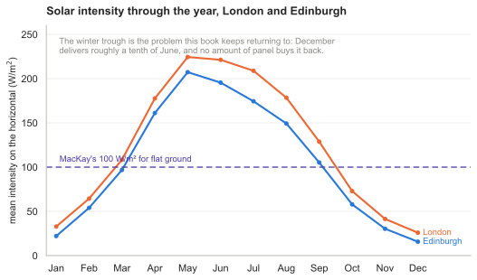
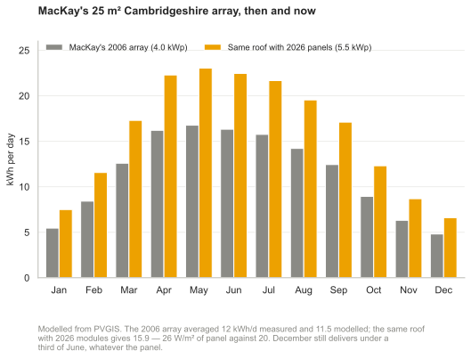
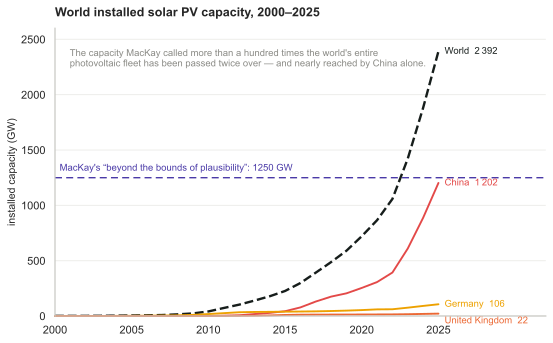
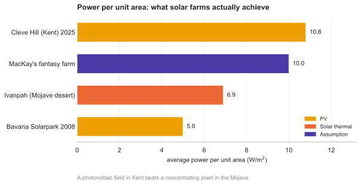
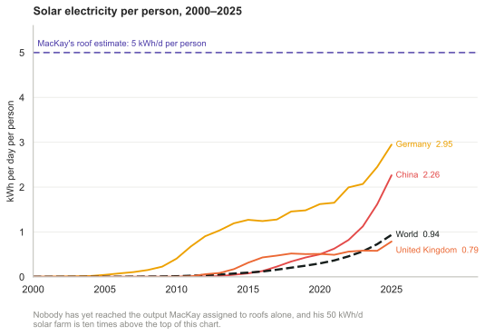
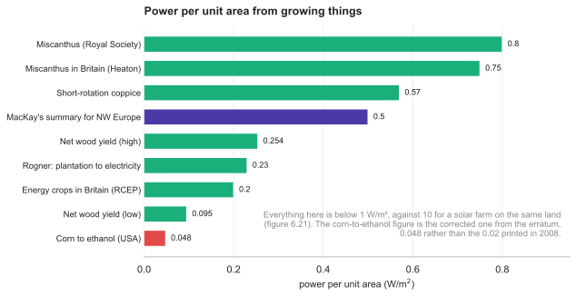
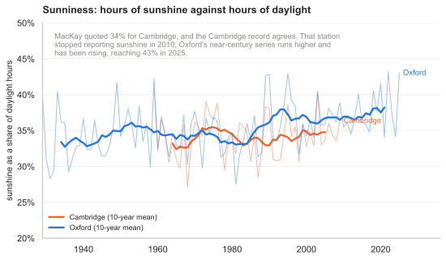
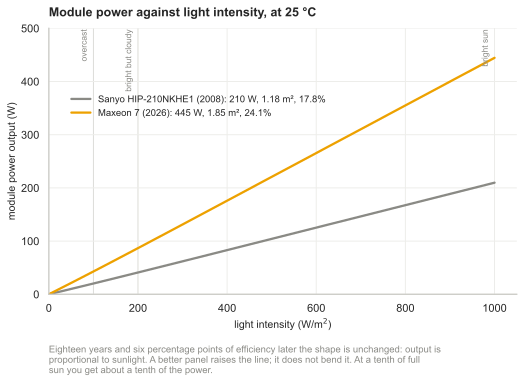
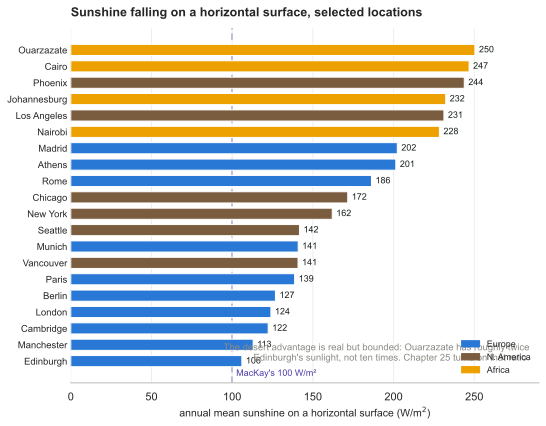
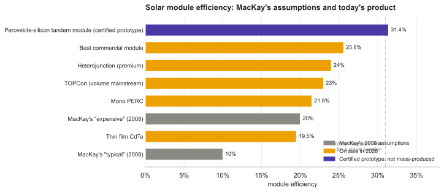

6 Solar

Figure 6.1. Sunlight hitting the earth at midday on a spring or autumn day. The density of sunlight per unit land area in Cambridge (latitude 52.) is about 60% of that at the equator.

Figure 6.2. Average solar intensity in London and Edinburgh through the year. Redrawn in the 2026 revision from PVGIS (Joint Research Centre), 2016–2020 means. MacKay’s 100 W/m2 for flat ground sits between the two: Edinburgh averages 106 and London 124.
We are estimating how our consumption stacks up against conceivable sustainable production. In the last three chapters we found car-driving and plane-flying to be bigger than the plausible on-shore wind-power potential of the United Kingdom. Could solar power put production back in the lead?
The power of raw sunshine at midday on a cloudless day is 1000W per square metre. That’s 1000 W per m2 of area oriented towards the sun, not per m2 of land area. To get the power per m2 of land area in Britain, we must make several corrections. We need to compensate for the tilt between the sun and the land, 1 which reduces the intensity of midday sun to about 60% of its value at the equator (figure 6.1). We also lose out because it is not midday all the time. On a cloud-free day in March or September, the ratio of the average intensity to the midday intensity is about 32%. Finally, we lose power because of cloud cover. In a typical UK location the sun shines during just 34% of daylight hours. 2
The combined effect of these three factors and the additional complication of the wobble of the seasons is that the average raw power of sunshine per square metre of south-facing roof in Britain is roughly 110 W/m2, and the average raw power of sunshine per square metre of flat ground is roughly 100 W/m2. 3
We can turn this raw power into useful power in four ways:
- Solar thermal: using the sunshine for direct heating of buildings or water.
- Solar photovoltaic: generating electricity.
- Solar biomass: using trees, bacteria, algae, corn, soy beans, or oilseed to make energy fuels, chemicals, or building materials.
- Food: the same as solar biomass, except we shovel the plants into humans or other animals.
(In a later chapter we’ll also visit a couple of other solar power techniques appropriate for use in deserts.)
Let’s make quick rough estimates of the maximum plausible powers that each of these routes could deliver. We’ll neglect their economic costs, and the energy costs of manufacturing and maintaining the power facilities.
Solar thermal
The simplest solar power technology is a panel making hot water. Let’s imagine we cover all south-facing roofs with solar thermal panels – that would be about 10 m2 of panels per person 4 – and let’s assume these are 50%-efficient at turning the sunlight’s 110 W/m2 into hot water (figure 6.3).

Figure 6.3. Solar power generated by a 3 m2 hot-water panel (green), and supplementary heat required (blue) to make hot water in the test house of Viridian Solar. (The photograph shows a house with the same model of panel on its roof.) The average solar power from 3 m2 was 3.8 kWh/d. The experiment simulated the hot-water consumption of an average European household – 100 litres of hot (60°C) water per day. The 1.5–2 kWh/d gap between the total heat generated (black line, top) and the hot water used (red line) is caused by heat-loss. The magenta line shows the electrical power required to run the solar system. The average power per unit area of these solar panels is 53 W/m2.
Multiplying
50% × 10 m2 × 110 W/m2
we find solar heating could deliver
13 kWh per day per person.
I colour this production box white in figure 6.4 to indicate that it describes production of low-grade energy – hot water is not as valuable as the highgrade electrical energy that wind turbines produce. Heat can’t be exported to the electricity grid. If you don’t need it, then it’s wasted. We should bear in mind that much of this captured heat would not be in the right place. In cities, where many people live, residential accommodation has less roof area per person than the national average. Furthermore, this power would be delivered non-uniformly through the year.

Figure 6.4. Solar thermal: a 10 m2 array of thermal panels can deliver (on average) about 13 kWh per day of thermal energy.
Solar photovoltaic
Photovoltaic (PV) panels convert sunlight into electricity. 5 Typical solar panels have an efficiency of about 10%; expensive ones perform at 20%. 6 (Fundamental physical laws limit the efficiency of photovoltaic systems to at best 60% with perfect concentrating mirrors or lenses, and 45% without concentration. A mass-produced device with efficiency greater than 30% would be quite remarkable. 7 ) The average power delivered by south-facing 20%-efficient photovoltaic panels in Britain would be
20%× 110 W/m2 = 22 W/m2.
Figure 6.5 shows data to back up this number. Let’s give every person 10 m2 of expensive (20%-efficient) solar panels and cover all south-facing roofs. These will deliver
5 kWh per day per person.

Figure 6.5. Solar photovoltaics: a 25-m2 array in Cambridgeshire. MacKay’s 2006 system peaked at about 4 kW and averaged 12 kWh per day — 20 W per square metre of panel.8 Recalculated in the 2026 revision: PVGIS reproduces that system at 11.5 kWh/d, and the same roof filled with 22%-efficient 2026 modules is 5.5 kWp delivering 15.9 kWh/d, or 26 W/m2 of panel.9
Since the area of all south-facing roofs is 10 m2 per person, there certainly isn’t space on our roofs for these photovoltaic panels as well as the solar thermal panels of the last section. So we have to choose whether to have the photovoltaic contribution or the solar hot water contribution. But I’ll just plop both these on the production stack anyway. Incidentally, the present cost of installing such photovoltaic panels is about four times the cost of installing solar thermal panels, but they deliver only half as much energy, albeit high-grade energy (electricity). So I’d advise a family thinking of going solar to investigate the solar thermal option first. The smartest solution, at least in sunny countries, is to make combined systems that deliver both electricity and hot water from a single installation. This is the approach pioneered by Heliodynamics, 10 who reduce the overall cost of their systems by surrounding small high-grade gallium arsenide photovoltaic units with arrays of slowly-moving flat mirrors; the mirrors focus the sunlight onto the photovoltaic units, which deliver both electricity and hot water; the hot water is generated by pumping water past the back of the photovoltaic units.
The conclusion so far: covering your south-facing roof at home with photovoltaics may provide enough juice to cover quite a big chunk of your personal average electricity consumption; but roofs are not big enough to make a huge dent in our total energy consumption. To do more with PV, we need to step down to terra firma. The solar warriors in figure 6.6 show the way.

Figure 6.6. Two solar warriors enjoying their photovoltaic system, which powers their electric cars and home. The array of 120 panels (300 W each, 2.2 m2 each) has an area of 268 m2, a peak output (allowing for losses in DC–to–AC conversion) of 30.5 kW, and an average output – in California, near Santa Cruz – of 5 kW (19 W/m2). Photo kindly provided by Kenneth Adelman. www.solarwarrior.com

Figure 6.7. A solar photovoltaic farm: 11 the 6.3 MW (peak) Solarpark in Mühlhausen, Bavaria. Its average power per unit land area is expected to be about 5 W/m2. Photo by SunPower.
(Figure omitted from this edition: third-party rights.)
Figure 6.8. Land areas per person in Britain.
Fantasy time: solar farming
If a breakthrough of solar technology occurs and the cost of photovoltaics came down enough that we could deploy panels all over the countryside, what is the maximum conceivable production? Well, if we covered 5% of the UK with 10%-efficient panels, we’d have
10% × 100 W/m2 × 200 m2 per person ≈ 50 kWh/day/person.
I assumed only 10%-efficient panels, by the way, because I imagine that solar panels would be mass-produced on such a scale only if they were very cheap, and it’s the lower-efficiency panels that will get cheap first. The power density (the power per unit area) of such a solar farm would be
10% × 100 W/m2 = 10 W/m2.
This power density is twice that of the Bavaria Solarpark (figure 6.7).
Could this flood of solar panels co-exist with the army of windmills we imagined in Chapter 4? Yes, no problem: windmills cast little shadow, and ground-level solar panels have negligible effect on the wind. How audacious is this plan? The solar power capacity required to deliver this 50 kWh per day per person in the UK is more than 100 times all the photovoltaics in the whole world. 12 So should I include the PV farm in my sustainable production stack? I’m in two minds. At the start of this book I said I wanted to explore what the laws of physics say about the limits of sustainable energy, assuming money is no object. On those grounds, I should certainly go ahead, industrialize the countryside, and push the PV farm onto the stack. At the same time, I want to help people figure out what we should be doing between now and 2050. And today, electricity from solar farms would be four times as expensive as the market rate. So I feel a bit irresponsible as I include this estimate in the sustainable production stack in figure 6.9 – paving 5% of the UK with solar panels seems beyond the bounds of plausibility in so many ways. 13 If we seriously contemplated doing such a thing, it would quite probably be better to put the panels in a two-fold sunnier country and send some of the energy home by power lines. We’ll return to this idea in Chapter 25.
Mythconceptions
Manufacturing a solar panel consumes more energy than it will ever deliver.
False. The energy yield ratio (the ratio of energy delivered by a system over its lifetime, to the energy required to make it) of a roof-mounted, grid-connected solar system in Central Northern Europe is 4, for a system with a lifetime of 20 years (Richards and Watt, 2007); and more than 7 in a sunnier spot such as Australia. (An energy yield ratio bigger than one means that a system is A Good Thing, energy-wise.) Wind turbines with a lifetime of 20 years have an energy yield ratio of 80.
Aren’t photovoltaic panels going to get more and more efficient as technology improves?
I am sure that photovoltaic panels will become ever cheaper; I’m also sure that solar panels will become ever less energy-intensive to manufacture, so their energy yield ratio will improve. But this chapter’s photovoltaic estimates weren’t constrained by the economic cost of the panels, nor by the energy cost of their manufacture. This chapter was concerned with the maximum conceivable power delivered. Photovoltaic panels with 20% efficiency are already close to the theoretical limit (see this chapter’s endnotes). I’ll be surprised if this chapter’s estimate for roof-based photovoltaics ever needs a significant upward revision.

Figure 6.9. Solar photovoltaics: a 10 m2 array of building-mounted south-facing panels with 20% efficiency can deliver about 5 kWh per day of electrical energy. If 5% of the country were coated with 10%-efficient solar panels (200 m2 of panels per person) they would deliver 50 kWh/day/person.
The fantasy got built
A section added in the 2026 revision. This chapter opens by saying “We’ll neglect their economic costs”. That sentence is where it aged. The physics in the pages above has survived almost untouched; the economics reversed completely, and reversed in the direction that made the physics matter more, not less.
The efficiency bet, which MacKay won
He assumed roof panels at 20%, called 10% typical, and wrote that “a mass-produced device with efficiency greater than 30% would be quite remarkable”. Mainstream modules in 2026 are TOPCon at 22–24%, about 70% of world production, with premium heterojunction at 23–25% and the best commercial module around 25.6%.14 His 5 kWh/d per person from a 10 m2 roof becomes something like 5.5 to 6. He predicted as much: “I’ll be surprised if this chapter’s estimate for roof-based photovoltaics ever needs a significant upward revision.” The revision is real but small — a tenth to a fifth, well short of significant.
The claim underneath it was wrong, though. “Photovoltaic panels with 20% efficiency are already close to the theoretical limit” holds only for the single-junction cells he had in mind, and his own endnote gives the escape route — multiple junctions, limit 45% without concentration. In July 2026 LONGi announced a crystalline-silicon–perovskite tandem cell at 35.5%, certified by the European Solar Test Installation, with tandem modules certified at 31.4%.15 That is past his “quite remarkable” line, though not yet mass-produced. The lesson is not that he was careless — he flagged the route himself — but that the ceiling he treated as near was a ceiling of one particular technology.
Power per unit area, which did not improve
Cleve Hill in Kent, commissioned on 1 July 2025, is Britain’s largest solar farm and more than four times the next: 373 MW on a 360-hectare site. British solar ran at a capacity factor of about 10.4% in 2025, so its average output over the site is roughly 11 W/m2.16
MacKay’s fantasy farm assumed 10%-efficient panels and arrived at 10 W/m2. Panels are now more than twice as efficient, and the answer is the same. The reason is not that spacing widened with efficiency — it does not, since row pitch is set by panel height, tilt and the lowest useful sun elevation, and a 22% panel needs exactly the spacing an 11% panel of the same dimensions needs. The reason is that MacKay’s number assumed no spacing at all. His 10% × 100 W/m2 applies the panel efficiency directly to land area, which is to say it imagines panels paving the ground; he noticed the consequence himself, remarking that his figure was twice the Bavaria Solarpark’s. A real farm leaves roughly half its land empty for access and shading margin. With a ground-cover ratio near 0.45, a 22% panel yields about 0.22 × 0.45 × 130 W/m2 × 0.8 ≈ 10 W/m2 — where the 130 is the irradiance in the tilted plane of the rows rather than the 100 W/m2 on the horizontal, and the 0.8 is the performance ratio that accounts for inverter, wiring, soiling and temperature losses. Those last two corrections work in opposite directions and largely cancel, which is worth saying out loud in a passage whose point is that a coincidence of cancelling effects should be named rather than admired. The doubling in efficiency was spent buying back the ground cover his idealisation had assumed for free.
Chapter 4 reaches the same conclusion about wind by a different route, and the difference is worth keeping straight. There, spacing genuinely scales with rotor diameter, so power per unit area is invariant to turbine size as a matter of geometry. Here, spacing is independent of cell efficiency, and the invariance is a coincidence of an idealisation and a conservative assumption offsetting each other. What the two share is only the moral: the device improved, the areal density did not, and it is areal density that the balance sheet needs.
The deployment reversal
Here MacKay was not merely conservative but inverted. To deliver 50 kWh/d per person in the UK needs about 1250 GW of capacity, which he noted was “more than 100 times all the photovoltaics in the whole world” — the world had 8.96 GW at the end of 2007.
At the end of 2025 the world had 2392 GW: 267 times the 2007 fleet, and 1.9 times the number he called beyond the bounds of plausibility. China alone has 1202 GW, which is 96% of MacKay’s fantasy figure, built by one country in eighteen years. The world added 512 GW during 2025 — two-fifths of the whole fantasy in a single year.17

Figure 6.20. Installed solar PV capacity. MacKay’s “more than 100 times all the photovoltaics in the whole world” is the dashed line; the world crossed it around 2022 and China has nearly reached it alone. Energy Institute Statistical Review of World Energy 2026.
Figure 6.20b. Solar energy consumption by region, from Our World in Data — capacity is what gets built, this is what it delivers, and where.
The cost reversal, which is the largest single change since the book
MacKay wrote that “electricity from solar farms would be four times as expensive as the market rate”, and costed his fantasy at €0.25 per kWh. The global weighted-average levelised cost of utility-scale solar was $0.043 per kWh in 2024, down about 90% from $0.460 in 2010, with total installed cost at $691 per kW, down 87% over the same period.18 Solar is now the cheapest source of new bulk electricity across most of the world.
He cannot fairly be faulted for this, because he told the reader he was setting cost aside and asking only what physics permits. But it is worth being blunt that the one variable he bracketed out is the one that moved by a factor of ten, and it moved far enough to turn his deliberately absurd thought experiment into an ordinary procurement decision.
What the cost collapse killed
The Ivanpah Solar Electric Generating System in the Mojave desert is the clearest casualty, and it is worth a paragraph because it tests the very suggestion this chapter ends on — that we should put the collectors in a sunnier country and ship the power home.
Ivanpah is not photovoltaic. It is concentrating solar thermal: 173 000 heliostats aiming sunlight at three 140-metre towers, receivers at 550°C, 392 MW across 3500 acres, opened February 2014 at a cost of $2.2 billion with a $1.6 billion federal loan guarantee. Three things went wrong with it.
It underperformed. Against an advertised 940 000 MWh a year it produced 419 085 MWh in 2014, 44.6% of projection, reaching 91.1% only by 2020.
It burns gas. The plant needs fossil heat to start each morning and to ride through cloud, and consumed 525 million cubic feet in 2014 — more than four times what was planned.
And it was undercut. In January 2025 its owners announced plans to shut it, eleven years into a plant built for far longer, not because anything wore out but because photovoltaics had become cheaper than running it. In December 2025 the California Public Utilities Commission rejected the closure agreement and required two of the three units to keep operating.19 It survives on a regulator’s order rather than on its economics.
Now put its power per unit area beside the others, using its best year:

Figure 6.21. Power per unit area. The two photovoltaic fields bracket the range; the concentrating plant in the desert falls between them, below a solar farm in Kent.
| W/m2 average | |
|---|---|
| Bavaria Solarpark, PV, 2008 (figure 6.7) | 5 |
| Ivanpah, solar thermal, Mojave desert | 6.9 |
| MacKay’s fantasy farm | 10 |
| Cleve Hill, PV, Kent, 2025 | 10.8 |
A photovoltaic field in cloudy Kent beats a concentrating solar plant in the Mojave, on the same measure, by half again. The desert has roughly twice the sunlight; the technology gave it all back and more. That does not overturn chapter 25’s argument for siting collectors where the sun is — the resource really is better — but it does show that the siting advantage can be smaller than the technology choice, and that a plant chosen for a desert can be obsolete before it is old.
How long the hardware lasts
The chapter’s energy yield ratio of 4 assumes a 20-year life. Modern modules carry 25- to 30-year warranties, degrade at 0.3–0.5% a year (0.25–0.3% for premium product) after about 3% lost in the first year, and are typically warranted to retain 87–92% of output at 25 years; many keep working at reduced output for 35 to 40. Inverters last 10–15 years, so a system will normally need one or two inverter replacements inside the life of its panels — the panel is not the whole plant, and lifetime arithmetic that counts only the glass will flatter the result.20
Chapter M puts photovoltaics at 10 or more against the 4 quoted here, and two distinct things separate those numbers. PV’s own rise from 4 to 10 is real change in the hardware and the siting: longer life, manufacture that takes less energy per panel, and the fact that this chapter’s 4 is Richards and Watt’s figure for a roof in central northern Europe, which is close to the worst case anyone builds in. The reordering — renewable electricity ending up above coal and oil rather than below them — is a change of accounting boundary, not of hardware. Chapter M harmonises every source to point of use, which charges the thermal fuels for the two-thirds they lose in a power station and leaves electricity-producing sources largely untouched. Neither effect on its own would do it: 2008 panels at 4 would still sit below chapter M’s hard coal at 8.8, however the boundary is drawn.
One of chapter M’s cautions cuts the other way and belongs here rather than in a footnote. PROI: a fast-growing industry scores far below its own facility ratio, because each year’s output is repaying the energy sunk into building next year’s capacity — onshore wind’s facility ratio of about 70 becomes roughly 25 at the industry level, and solar is growing faster than wind. At 512 GW a year, the fleet’s return is meaningfully worse than any single panel’s. Chapter M also finds diminishing returns from adding storage and overbuild to make an intermittent source firm, which is chapter 26’s subject and chapter 28a’s.
What actually binds now
Not area, which was MacKay’s constraint. Not cost, which was his stated non-constraint and has since collapsed. What binds is value.
Every panel in a country generates in the same hours, so each one added lowers the price in exactly the hours when all the others are selling. In Great Britain in 2025, against a time-weighted average market price of £79.9/MWh, solar captured £65.9 — a value factor of 0.82, the lowest of any technology on the system, against wind’s 0.90 and gas’s 1.19.21 The resource this chapter measures in W/m2 is worth progressively less per unit as it grows, and that limit bites long before the land runs out.
This is a constraint MacKay could not have seen, because it only becomes visible once the build-out he called implausible has actually happened. Chapter 28a, “The value of renewable energy as it scales”, is about it, and the full model — the balancing and reinforcing loops, with the Swedish and European data behind each figure — is at oluies.github.io/elmix.22
And yet
Set against all that, here is what solar actually delivered in 2025, in this book’s units:
| kWh/d per person | |
|---|---|
| United Kingdom | 0.79 |
| World | 0.94 |
| China | 2.26 |
| Germany | 2.95 |
MacKay’s roof estimate was 5 and his fantasy farm was 50. Britain, having built 22 GW, gets less than one kWh per day per person from it.23 The cost argument reversed; the quantity argument did not. Everything this chapter says about how much area a solar-powered Britain would need still stands, and is still the reason the answer is hard.

Figure 6.22. Solar electricity per person, in this book’s units. Nobody has yet reached what MacKay assigned to roofs alone, and his 50 kWh/d solar farm is ten times above the top of the chart. Generation from the Energy Institute’s Statistical Review 2026, divided by population.
Solar biomass
All of a sudden, you know, we may be in the energy business by being able to grow grass on the ranch! And have it harvested and converted into energy. That’s what’s close to happening.
George W. Bush, February 2006
All available bioenergy solutions involve first growing green stuff, and then doing something with the green stuff. How big could the energy collected by the green stuff possibly be? There are four main routes to get energy from solar-powered biological systems:
- We can grow specially-chosen plants and burn them in a power station that produces electricity or heat or both. We’ll call this “coal substitution.”
- We can grow specially-chosen plants (oil-seed rape, sugar cane, or corn, say), turn them into ethanol or biodiesel, and shove that into cars, trains, planes or other places where such chemicals are useful. Or we might cultivate genetically-engineered bacteria, cyanobacteria, or algae that directly produce hydrogen, ethanol, or butanol, or even electricity. We’ll call all such approaches “petroleum substitution.”
- We can take by-products from other agricultural activities and burn them in a power station. The by-products might range from straw (a by-product of Weetabix) to chicken poo (a by-product of McNuggets). Burning by-products is coal substitution again, but using ordinary plants, not the best high-energy plants. A power station that burns agricultural by-products won’t deliver as much power per unit area of farmland as an optimized biomass-growing facility, but it has the advantage that it doesn’t monopolize the land. Burning methane gas from landfill sites is a similar way of getting energy, but it’s sustainable only as long as we have a sustainable source of junk to keep putting into the landfill sites. (Most of the landfill methane comes from wasted food; people in Britain throw away about 300 g of food per day per person.) 24 Incinerating household waste is another slightly less roundabout way of getting power from solar biomass.
- We can grow plants and feed them directly to energy-requiring humans or other animals.

Figure 6.10. Some Miscanthus grass enjoying the company of Dr Emily Heaton, who is 5′4″ (163 cm) tall. In Britain, Miscanthus achieves a power per unit area of 0.75 W/m2. Photo provided by the University of Illinois. 25
For all of these processes, the first staging post for the energy is in a chemical molecule such as a carbohydrate in a green plant. We can therefore estimate the power obtainable from any and all of these processes by estimating how much power could pass through that first staging post. All subsequent steps involving tractors, animals, chemical facilities, landfill sites, or power stations can only lose energy. So the power at the first staging post is an upper bound on the power available from all plant-based power solutions.
So, let’s simply estimate the power at the first staging post. (In Chapter D we’ll go into more detail, estimating the maximum contribution of each process.) The average harvestable power of sunlight in Britain is 100 W/m2. The most efficient plants in Europe are about 2%-efficient at turning solar energy into carbohydrates, which would suggest that plants might deliver 2 W/m2; however, their efficiency drops at higher light levels, and the best performance of any energy crops in Europe is closer to 0.5 W/m2. 26 Let’s cover 75% of the country with quality green stuff. That’s 3000 m2 per person devoted to bio-energy. This is the same as the British land area

Figure 6.11.27 Power production, per unit area, achieved by various plants. Rebuilt in the 2026 revision from the sources in this chapter’s own endnotes rather than from the 2008 artwork, and with the erratum applied: corn to ethanol is 0.048 W/m2, not the 0.02 printed in 2008. These power densities vary with irrigation and fertilization; wood has a range from 0.095–0.254 W/m2. In the text, MacKay uses 0.5 W/m2 as a summary figure for the best energy crops in NW Europe.28
currently devoted to agriculture. So the maximum power available, ignoring all the additional costs of growing, harvesting, and processing the greenery, is
0.5 W/m2 × 3000 m2 per person = 36 kWh/d per person.
Wow. That’s not very much, considering the outrageously generous assumptions we just made, to try to get a big number. If you wanted to get biofuels for cars or planes from the greenery, all the other steps in the chain from farm to spark plug would inevitably be inefficient. I think it’d be optimistic to hope that the overall losses along the processing chain would be as small as 33%. Even burning dried wood in a good wood boiler loses 20% of the heat up the chimney. 29 So surely the true potential power from biomass and biofuels cannot be any bigger than 24 kWh/d per person. And don’t forget, we want to use some of the greenery to make food for us and for our animal companions.

Figure 6.12. Solar biomass, including all forms of biofuel, waste incineration, and food: 24 kWh/d per person.
Could genetic engineering produce plants that convert solar energy to chemicals more efficiently? It’s conceivable; but I haven’t found any scientific publication predicting that plants in Europe could achieve net power production beyond 1 W/m2.

Figure 6.13. Sunniness: hours of sunshine as a fraction of daylight hours. Extended in the 2026 revision. MacKay quoted 34% for Cambridge and the full station record agrees, averaging 34.2% over 1959–2009. That station stopped reporting sunshine in 2010, so Oxford’s record — running from 1929 and still current — carries the series to the present at 35.4% over 97 years, rising to 43% in 2025.30
I’ll pop 24 kWh/d per person onto the green stack, emphasizing that I think this number is an over-estimate – I think the true maximum power that we could get from biomass will be smaller because of the losses in farming and processing.
I think one conclusion is clear: biofuels can’t add up – at least, not in countries like Britain, and not as a replacement for all transport fuels. Even leaving aside biofuels’ main defects – that their production competes with food, and that the additional inputs required for farming and processing often cancel out most of the delivered energy (figure 6.14) – biofuels made from plants, in a European country like Britain, can deliver so little power, I think they are scarcely worth talking about.
Notes and further reading

Figure 6.14. This figure illustrates the quantitative questions that must be asked of any proposed biofuel. What are the additional energy inputs required for farming and processing? What is the delivered energy? What is the net energy output? Often the additional inputs and losses wipe out most of the energy delivered by the plants.

Figure 6.15. Power produced as a function of light intensity, at 25°C. Redrawn in the 2026 revision with a current flagship module, the Maxeon 7 (445 W, 24.1%, −0.27%/°C), beside MacKay’s Sanyo HIP-210NKHE1. Six percentage points of efficiency later the shape is unchanged: a better panel raises the line, it does not bend it.31

Figure 6.16. Average power of sunshine falling on a horizontal surface, in Europe, North America and Africa. Redrawn in the 2026 revision from PVGIS, 2016–2020 means, all on the ERA5 database so the continents are comparable.


Figure 6.17. Part of Shockley and Queisser’s explanation for the 31% limit of the efficiency of simple photovoltaics. Left: the spectrum of midday sunlight. The vertical axis shows the power density in W/m2 per eV of spectral interval. The visible part of the spectrum is indicated by the coloured section. Right: the energy captured by a photovoltaic device with a single band-gap at 1.1 eV is shown by the tomato-shaded area. Photons with energy less than the band-gap are lost. Some of the energy of photons above the band-gap is lost; for example half of the energy of every 2.2 eV photon is lost. Further losses are incurred because of inevitable radiation from recombining charges in the photovoltaic material.

Figure 6.18. Efficiencies of solar photovoltaic modules available for sale. Redrawn in the 2026 revision. MacKay assumed 20% for roof-top and 10% for country-covering photovoltaics; 20% is now below the volume mainstream, and the certified tandem prototype has passed the single-junction Shockley–Queisser limit that made his ceiling look near.32

Figure 6.19. A combined-heat-and-power photovoltaic unit from Heliodynamics. A reflector area of 32 m2 (a bit larger than the side of a double-decker bus) delivers up to 10 kW of heat and 1.5 kW of electrical power. In a sun-belt country, one of these one-ton devices could deliver about 60 kWh/d of heat and 9 kWh/d of electricity. These powers correspond to average fluxes of 80 W/m2 of heat and 12 W/m2 of electricity (that’s per square metre of device surface); these fluxes are similar to the fluxes delivered by standard solar heating panels and solar photovoltaic panels, but Heliodynamics’s concentrating design delivers power at a lower cost, because most of the material is simple flat glass. For comparison, the total power consumption of the average European person is 125 kWh/d.
Here are a few sources to back up my estimate of 0.5 W/m2 for vegetable power in the UK. The Royal Commission on Environmental Pollution’s estimate of the potential delivered power density from energy crops in Britain is 0.2 W/m2 (Royal Commission on Environmental Pollution, 2004). On page 43 of the Royal Society’s biofuels document (Royal Society working group on biofuels, 2008), Miscanthus tops the list, delivering about 0.8 W/m2 of chemical power.
In the World Energy Assessment published by the UNDP, Rogner (2000) writes: “Assuming a 45% conversion efficiency to electricity and yields of 15 oven dry tons per hectare per year, 2 km2 of plantation would be needed per megawatt of electricity of installed capacity running 4,000 hours a year.” That is a power per unit area of 0.23 W(e)/m2. (1 W(e) means 1 watt of electrical power.)
Energy for Sustainable Development Ltd (2003) estimates that short-rotation coppices can deliver over 10 tons of dry wood per hectare per year, which corresponds to a power density of 0.57 W/m2. (Dry wood has a calorific value of 5 kWh per kg.)
According to Archer and Barber (2004), the instantaneous efficiency of a healthy leaf in optimal conditions can approach 5%, but the long-term energystorage efficiency of modern crops is 0.5–1%. Archer and Barber suggest that by genetic modification, it might be possible to improve the storage efficiency of plants, especially C4 plants, which have already naturally evolved a more efficient photosynthetic pathway. C4 plants are mainly found in the tropics and thrive in high temperatures; they don’t grow at temperatures below 10°C. Some examples of C4 plants are sugarcane, maize, sorghum, finger millet, and switchgrass. Zhu et al. (2008) calculate that the theoretical limit for the conversion efficiency of solar energy to biomass is 4.6% for C3 photosynthesis at 30°C and today’s 380 ppm atmospheric CO2 concentration, and 6% for C4 photosynthesis. They say that the highest solar energy conversion efficiencies reported for C3 and C4 crops are 2.4% and 3.7% respectively; and, citing Boyer (1982), that the average conversion efficiencies of major crops in the US are 3 or 4 times lower than those record efficiencies (that is, about 1% efficient). One reason that plants don’t achieve the theoretical limit is that they have insufficient capacity to use all the incoming radiation of bright sunlight. Both these papers (Zhu et al., 2008; Boyer, 1982) discuss prospects for genetic engineering of more-efficient plants.
… compensate for the tilt between the sun and the land. The latitude of Cambridge is θ = 52°; the intensity of midday sunlight is multiplied by cos θ ≈ 0.6. The precise factor depends on the time of year, and varies between cos(θ + 23°) = 0.26 and cos(θ - 23°) = 0.87.↩︎
In a typical UK location the sun shines during one third of daylight hours. The Highlands get 1100 h sunshine per year – a sunniness of 25%. The best spots in Scotland get 1400 h per year – 32%. Cambridge: 1500 ± 130 h per year – 34%. South coast of England (the sunniest part of the UK): 1700 h per year – 39%. [2rqloc] Cambridge data from [2szckw]. See also figure 6.16.↩︎
The average raw power of sunshine per square metre of south-facing roof in Britain is roughly 110 W/m2, and of flat ground, roughly 100 W/m2. Source: NASA “Surface meteorology and Solar Energy” [5hrxls]. Surprised that there’s so little difference between a tilted roof facing south and a horizontal roof? I was. The difference really is just 10% [6z9epq].↩︎
… that would be about 10 m2 of panels per person. I estimated the area of south-facing roof per person by taking the area of land covered by buildings per person (48 m2 in England – table I.6), multiplying by ¼ to get the southfacing fraction, and bumping the area up by 40% to allow for roof tilt. This gives 16 m2 per person. Panels usually come in inconvenient rectangles so some fraction of roof will be left showing; hence 10 m2 of panels.↩︎
The average power delivered by photovoltaic panels… There’s a myth going around that states that solar panels produce almost as much power in cloudy conditions as in sunshine. This is simply not true. On a bright but cloudy day, solar photovoltaic panels and plants do continue to convert some energy, but much less: photovoltaic production falls roughly ten-fold when the sun goes behind clouds (because the intensity of the incoming sunlight falls ten-fold). As figure 6.15 shows, the power delivered by photovoltaic panels is almost exactly proportional to the intensity of the sunlight – at least, if the panels are at 25°C. To complicate things, the power delivered depends on temperature too – hotter panels have reduced power (typically 0.38% loss in power per °C) – but if you check data from real panels, e.g. at www.solarwarrior.com, you can confirm the main point: output on a cloudy day is far less than on a sunny day. This issue is obfuscated by some solar-panel promoters who discuss how the “efficiency” varies with sunlight. “The panels are more efficient in cloudy conditions,” they say; this may be true, but efficiency should not be confused with delivered power.↩︎
Typical solar panels have an efficiency of about 10%; expensive ones perform at 20%. See figure 6.18. Sources: Turkenburg (2000), Sunpower www.sunpowercorp.com, Sanyo www.sanyo-solar.eu, Suntech.↩︎
A device with efficiency greater than 30% would be quite remarkable. This is a quote from Hopfield and Gollub (1978), who were writing about panels without concentrating mirrors or lenses. The theoretical limit for a standard “single-junction” solar panel without concentrators, the Shockley–Queisser limit, says that at most 31% of the energy in sunlight can be converted to electricity (Shockley and Queisser, 1961). (The main reason for this limit is that a standard solar material has a property called its band-gap, which defines a particular energy of photon that that material converts most efficiently. Sunlight contains photons with many energies; photons with energy below the band-gap are not used at all; photons with energy greater than the band-gap may be captured, but all their energy in excess of the band-gap is lost.) Concentrators (lenses or mirrors) can both reduce the cost (per watt) of photovoltaic systems, and increase their efficiency. The Shockley–Queisser limit for solar panels with concentrators is 41% efficiency. The only way to beat the Shockley–Queisser limit is to make fancy photovoltaic devices that split the light into different wavelengths, processing each wavelength-range with its own personalized band-gap. These are called multiple-junction photovoltaics. Recently multiple-junction photovoltaics with optical concentrators have been reported to be about 40% efficient. [2tl7t6], www.spectrolab.com. In July 2007, the University of Delaware reported 42.8% efficiency with 20-times concentration [6hobq2], [2lsx6t]. In August 2008, NREL reported 40.8% efficiency with 326-times concentration [62ccou]. Strangely, both these results were called world efficiency records. What multiple-junction devices are available on the market? Uni-solar sell a thin-film triple-junction 58 W(peak) panel with an area of 1 m2. That implies an efficiency, in full sunlight, of only 5.8%.↩︎
Figure 6.5: Solar PV data. Data and photograph kindly provided by Jonathan Kimmitt.↩︎
Figure 6.5 recalculated with PVGIS (European Commission Joint Research Centre), ERA5 radiation database, 35° tilt facing south, 14% system losses, at Cambridge (52.205 N, 0.119 E). A 4.0 kWp system models at 4209 kWh/year, or 11.5 kWh/d, against the 12 kWh/d MacKay measured in 2006 — agreement close enough to use the same model for the modern case. Filling the same 25 m2 with 22%-efficient modules gives 5.5 kWp and 5787 kWh/year, 15.9 kWh/d, which is 26.4 W per m2 of panel against MacKay’s 20. This is a modelled comparison on a common basis, not a second measurement; the seasonal shape matters more than the annual total, and December remains under a third of June in both cases.↩︎
Heliodynamics – www.hdsolar.com. See figure 6.19. A similar system is made by Arontis www.arontis.se.↩︎
The Solarpark in Muhlhausen, Bavaria. On average this 25-hectare farm is expected to deliver 0.7 MW (17 000 kWh per day). New York’s Stillwell Avenue subway station has integrated amorphous silicon thin-film photovoltaics in its roof canopy, delivering 4 W/m2 (Fies et al., 2007). The Nellis solar power plant in Nevada was completed in December, 2007, on 140 acres, and is expected to generate 30 GWh per year. That’s 6 W/m2 [5hzs5y]. Serpa Solar Power Plant, Portugal (PV), “the world’s most powerful solar power plant,” [39z5m5] [2uk8q8] has sun-tracking panels occupying 60 hectares, i.e., 600 000 m2 or 0.6 km2, expected to generate 20 GWh per year, i.e., 2.3 MW on average. That’s a power per unit area of 3.8 W/m2.↩︎
The solar power capacity required to deliver 50 kWh/d per person in the UK is more than 100 times all the photovoltaics in the whole world. To deliver 50 kWh/d per person in the UK would require 125 GW average power, which requires 1250 GW of capacity. At the end of 2007, world installed photovoltaics amounted to 10 GW peak; the build rate is roughly 2 GW per year.↩︎
… paving 5% of this country with solar panels seems beyond the bounds of plausibility. My main reason for feeling such a panelling of the country would be implausible is that Brits like using their countryside for farming and recreation rather than solar-panel husbandry. Another concern might be price. This isn’t a book about economics, but here are a few figures. Going by the price-tag of the Bavarian solar farm, to deliver 50 kWh/d per person would cost €91 000 per person; if that power station lasted 20 years without further expenditure, the wholesale cost of the electricity would be €0.25 per kWh. Further reading: David Carlson, BP solar [2ahecp].↩︎
Module efficiencies are for 2026 product: TOPCon, about 70% of world cell production, at 22–24% module efficiency; heterojunction at 23–25%; the best commercially available module about 25.6%. The tandem record is LONGi’s crystalline-silicon–perovskite cell at 35.5%, certified by the European Solar Test Installation and announced at the Solar and Energy Storage Innovation Conference in July 2026, with tandem modules certified at 31.4% and 29.4%: https://www.longi.com/en/news/crystalline-silicon-perovskite-tandem-solar-cell-new-world-efficiency-2026/. LONGi’s progression was 33.9% in November 2023, 34.6% in June 2024, then 34.85%, 35.2% and 35.5%. The theoretical limit for a two-junction tandem is about 43%, against the Shockley–Queisser limit for a single junction — 31% in Shockley and Queisser’s original 1961 paper, which is the figure MacKay’s endnote 7 and figure 6.17 use, and 33.7% on the modern detailed-balance calculation — which is the escape route MacKay’s own endnote 7 describes. A record cell is not a product: these are laboratory devices, and the gap between champion cell and mass-produced module has historically run to several years and several percentage points.↩︎
Module efficiencies are for 2026 product: TOPCon, about 70% of world cell production, at 22–24% module efficiency; heterojunction at 23–25%; the best commercially available module about 25.6%. The tandem record is LONGi’s crystalline-silicon–perovskite cell at 35.5%, certified by the European Solar Test Installation and announced at the Solar and Energy Storage Innovation Conference in July 2026, with tandem modules certified at 31.4% and 29.4%: https://www.longi.com/en/news/crystalline-silicon-perovskite-tandem-solar-cell-new-world-efficiency-2026/. LONGi’s progression was 33.9% in November 2023, 34.6% in June 2024, then 34.85%, 35.2% and 35.5%. The theoretical limit for a two-junction tandem is about 43%, against the Shockley–Queisser limit for a single junction — 31% in Shockley and Queisser’s original 1961 paper, which is the figure MacKay’s endnote 7 and figure 6.17 use, and 33.7% on the modern detailed-balance calculation — which is the escape route MacKay’s own endnote 7 describes. A record cell is not a product: these are laboratory devices, and the gap between champion cell and mass-produced module has historically run to several years and several percentage points.↩︎
Cleve Hill Solar Park, Graveney Marshes, Kent: 373 MW on a site of about 360 hectares, of which roughly 320 hectares carry panels, with a further managed bird-habitat area alongside; more than 550 000 modules; fully operational 1 July 2025; a 150 MW battery is being added. Sources differ on the exact split between panelled land and habitat, and the published figures do not reconcile to a single total, so the round 360 ha is used throughout. Note that the 320 ha is the panelled zone, inter-row gaps included, not the area of glass: module area is about 1.7 km2 (373 MW ÷ 22% ÷ 1 kW/m2), which is a ground-cover ratio of roughly 0.47 over the site and is the figure the body uses. The next largest operational British solar farm, Llanwern in Wales, is 49.9 MW. The capacity factor is derived here rather than quoted: 20.0 TWh generated in 2025 from 22 GW installed is 10.4%, and 373 MW × 0.104 spread over 3.6 km2 gives 10.8 W/m2. Two caveats run in opposite directions. Generation and capacity are both taken from the Energy Institute’s Statistical Review of World Energy 2026 so that the ratio is internally consistent; the Ember series behind chapter 28a’s chart of the UK generation mix gives UK solar as 19 TWh for 2025, which would make the capacity factor 9.9%, Cleve Hill 10.3 W/m2 and the per-person figure 0.75 kWh/d. None of the conclusions here turn on which series is used. Second, applying a national capacity factor dominated by rooftop systems at imperfect orientation understates a new utility farm in the south of England, whose metered output is likely higher; the estimate is therefore conservative in Cleve Hill’s favour.↩︎
World installed solar capacity from the Energy Institute’s Statistical Review of World Energy 2026, which covers photovoltaics and concentrated solar together: 8 956 MW at end-2007, 1 422 GW at end-2023, 1 880 GW at end-2024 and 2 392 GW at end-2025. China 1 202 GW, Germany 106 GW, the United Kingdom 22 GW at end-2025. MacKay’s 1250 GW is his own figure: 50 kWh/d per person in the UK is 125 GW average, which at a 10% capacity factor needs 1250 GW of capacity. Note that his comparison was to peak world capacity of 10 GW at end-2007 with a build rate of 2 GW a year; the build rate in 2025 was about 512 GW.↩︎
IRENA, Renewable Power Generation Costs in 2024 (July 2025): global weighted-average LCOE for utility-scale solar PV of USD 0.043/kWh in 2024, against USD 0.460/kWh in 2010, a fall of about 90%; global weighted-average total installed cost USD 691/kW in 2024, down 11% year-on-year and 87% since 2010, with module and inverter cost reductions accounting for about 60% of the fall and installation, development and EPC costs a further 30%. MacKay’s €0.25/kWh is his own calculation from the price tag of the Bavarian solar farm, assuming a 20-year life with no further expenditure — an assumption the note on inverter replacement below bears on.↩︎
Ivanpah Solar Electric Generating System, San Bernardino County, California. Figures in this note follow the summary at https://en.wikipedia.org/wiki/Ivanpah_Solar_Power_Facility and the sources cited there; they have not been checked against the primary records, and readers wanting to verify them should go to EIA form 923 for generation and fuel consumption and to the California Public Utilities Commission’s own docket for the closure proceeding. 392 MW gross (440 MW originally planned) on 3500 acres of public land, opened 13 February 2014, cost $2.2 billion (about $2.86 billion in 2024 money) with a $1.6 billion Department of Energy loan guarantee. Generation against an advertised 940 000 MWh/year: 419 085 MWh in 2014 (44.6%), 653 122 in 2015 (69.5%), 856 301 in 2020 (91.1%). Gas consumption reached 525 million cubic feet in 2014. Bird mortality is estimated at 3500–6000 a year from collision and from solar flux reaching 1000°F, a cost that no power-per-unit-area figure captures. Closure was announced in January 2025, citing cheaper photovoltaics; the California Public Utilities Commission rejected the closure agreement in December 2025 and required two of the three units to remain operational. Neither the CPUC proceeding number nor the EIA plant identifier has been established here, so that decision — the claim the section leans on hardest — remains the least checkable statement in the note; it is described in the body without characterising the vote. The power density here is computed from the best year: 856 301 MWh over 8760 hours is 97.8 MW average, and 3500 acres is 14.16 km2, giving 6.9 W/m2. Note that this compares Ivanpah’s measured best year against an estimate for Cleve Hill derived from a national capacity factor, which is not a like-for-like basis.↩︎
Typical modern module degradation is 0.3–0.5% a year, with premium monocrystalline product at 0.25–0.3%, after about 3% lost in the first year; warranties commonly guarantee 90% of rated output at 10 years and 80–92% at 25–30 years, and many tier-one modules continue to work at reduced output for 35–40 years. String inverters are generally rated for 10–15 years, some exceeding 20, so one or two replacements fall inside the panels’ warranted life. These are manufacturer and industry figures rather than independent field measurements, and real-world degradation depends heavily on climate, mounting and maintenance.↩︎
Capture price is the sum of production times spot price, divided by total production — the average price a generator actually realises, weighted by its own output. Great Britain 2025: time-weighted average £79.9/MWh, solar £65.9 (value factor 0.82), wind £72.0 (0.90), gas £94.8 (1.19). These are the same figures as chapter 28a’s, from this edition’s data-refresh script (
Refresh.scala, DuckDB) over Elexon BMRS settlement data; the elmix reference list at https://oluies.github.io/elmix/modell/referenser.html is supplementary further reading rather than the primary source.↩︎The elmix cannibalization model, https://oluies.github.io/elmix/modell/system.html.↩︎
Solar generation in 2025 from the Energy Institute’s Statistical Review of World Energy 2026 — United Kingdom 20.0 TWh, world 2 811.1 TWh, China 1 173.2 TWh, Germany 91.6 TWh — divided by population for the matching year and then by 365. Population is Our World in Data’s series year by year rather than a single present-day figure, which matters for the early part of figure 6.22: world population in 2000 was 6.15 billion, not today’s 8.2. That series ends in 2023, so 2024 and 2025 are extended at each region’s mean growth over the preceding three years, which moves the per-person figures by well under 1%. These are per head of total population, not per household or per connected customer.↩︎
People in Britain throw away about 300 g of food per day. Source: Ventour (2008).↩︎
Figure 6.10. In the USA, Miscanthus grown without nitrogen fertilizer yields about 24 t/ha/y of dry matter. In Britain, yields of 12–16 t/ha/y are reported. Dry Miscanthus has a net calorific value of 17 MJ/kg, so the British yield corresponds to a power density of 0.75 W/m2. Sources: Heaton et al. (2004) and [6kqq77]. The estimated yield is obtained only after three years of undisturbed growing.↩︎
The most efficient plants are about 2% efficient; but the delivered power per unit area is about 0.5 W/m2. At low light intensities, the best British plants are 2.4% efficient in well-fertilized fields (Monteith, 1977) but at higher light intensities, their conversion efficiency drops. According to Turkenburg (2000) and Schiermeier et al. (2008), the conversion efficiency of solar to biomass energy is less than 1%.↩︎
Figure 6.11. The numbers in this figure are drawn from Rogner (2000) (net energy yields of wood, rape, sugarcane, and tropical plantations); Bayer Crop Science (2003) (rape to biodiesel); Francis et al. (2005) and Asselbergs et al. (2006) (jatropha); Mabee et al. (2006) (sugarcane, Brazil); Schmer et al. (2008) (switchgrass, marginal cropland in USA); Shapouri et al. (1995) (corn to ethanol); Royal Commission on Environmental Pollution (2004); Royal Society working group on biofuels (2008); Energy for Sustainable Development Ltd (2003); Archer and Barber (2004); Boyer (1982); Monteith (1977).↩︎
Figure 6.11 is rebuilt from the figures MacKay cites in endnotes 14 to 16 rather than digitised from the 2008 artwork, so it carries fewer crops than the original: the Royal Commission on Environmental Pollution’s 0.2 W/m2 for British energy crops, Rogner’s 0.23 W(e)/m2 for plantation-to-electricity, Energy for Sustainable Development’s 0.57 W/m2 for short-rotation coppice, Heaton and colleagues’ 0.75 W/m2 for Miscanthus in Britain, the Royal Society’s 0.8 W/m2 for Miscanthus, the 0.095–0.254 W/m2 range for net wood yield, and MacKay’s own 0.5 W/m2 summary. Corn to ethanol is shown at the erratum value of 0.048 W/m2. The tropical entries in the original figure are not reproduced here.↩︎
Even just setting fire to dried wood in a good wood boiler loses 20% of the heat up the chimney. Sources: Royal Society working group on biofuels (2008); Royal Commission on Environmental Pollution (2004).↩︎
Monthly sunshine hours from the Met Office’s historic station data for Cambridge NIAB and Oxford, divided by daylight hours computed from the standard sunrise equation at each station’s latitude. Only years with all twelve months reported are counted. Cambridge NIAB averages 34.2% over 51 complete years, 1959–2009, and stopped reporting sunshine after 2010; Oxford averages 35.4% over 97 complete years, 1929–2025. Two cautions: the two stations are 130 km apart and not interchangeable, and the record changes instrument part-way — Campbell–Stokes recorders give way to automatic Kipp & Zonen sensors, a transition known to shift measured totals — so the long-run trend should be read with more care than the levels.↩︎
Figure 6.15 is modelled rather than measured. Output is taken as proportional to irradiance with a small low-light efficiency droop, about 3% down at 200 W/m2, which is typical of crystalline silicon; the ratings are the Maxeon 7 at 445 W and 24.1% module efficiency over 1.85 m2 with a −0.27%/°C power temperature coefficient, and MacKay’s Sanyo HIP-210NKHE1 at 210 W over 1.18 m2. MacKay’s original plotted datasheet values for the Sanyo; the modern curve here is constructed on the same assumption of proportionality rather than taken from a published low-irradiance table, and is offered to make the shape comparison, not as a substitute for a datasheet.↩︎
Module efficiencies are for 2026 product: TOPCon, about 70% of world cell production, at 22–24% module efficiency; heterojunction at 23–25%; the best commercially available module about 25.6%. The tandem record is LONGi’s crystalline-silicon–perovskite cell at 35.5%, certified by the European Solar Test Installation and announced at the Solar and Energy Storage Innovation Conference in July 2026, with tandem modules certified at 31.4% and 29.4%: https://www.longi.com/en/news/crystalline-silicon-perovskite-tandem-solar-cell-new-world-efficiency-2026/. LONGi’s progression was 33.9% in November 2023, 34.6% in June 2024, then 34.85%, 35.2% and 35.5%. The theoretical limit for a two-junction tandem is about 43%, against the Shockley–Queisser limit for a single junction — 31% in Shockley and Queisser’s original 1961 paper, which is the figure MacKay’s endnote 7 and figure 6.17 use, and 33.7% on the modern detailed-balance calculation — which is the escape route MacKay’s own endnote 7 describes. A record cell is not a product: these are laboratory devices, and the gap between champion cell and mass-produced module has historically run to several years and several percentage points.↩︎